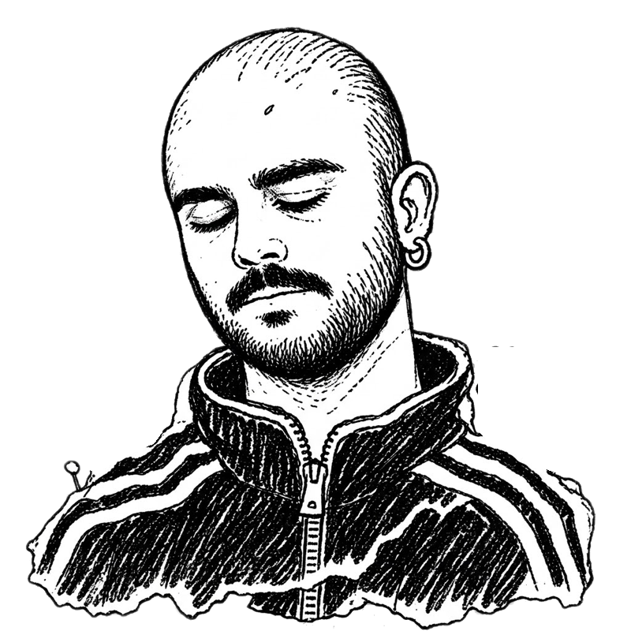

kailkob.exe
–
□
✕
http://kailkob.github.io/kailkob-links
▼
Kailkob

nuevo single
E
Ding Dong Piro
↗
en Apple Music (se abre en otra pestaña)
0:30
Apple Music
↗
(se abre en otra pestaña)
Spotify
↗
(se abre en otra pestaña)
YouTube
↗
(se abre en otra pestaña)
TikTok
↗
(se abre en otra pestaña)
Instagram
↗
(se abre en otra pestaña)